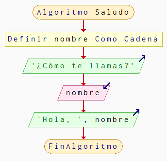
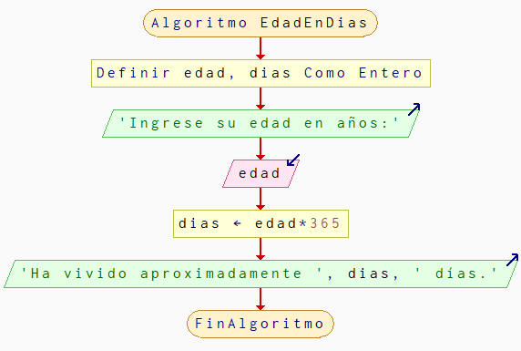
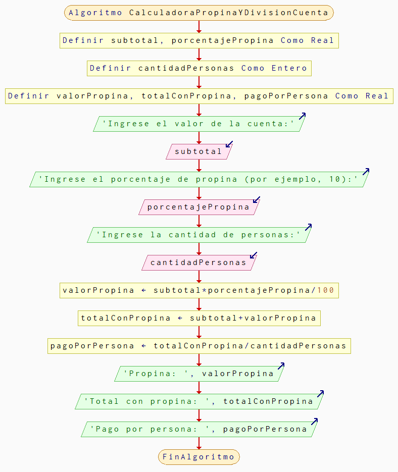
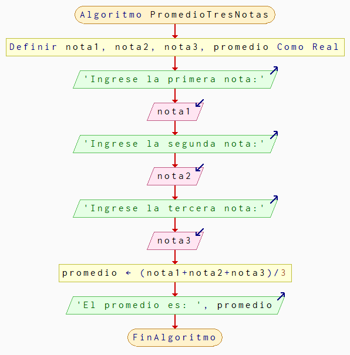

Ejercicio 1. Saludo
Lee un nombre y muestra un saludo usando el dato ingresado.
Pruebas de referencia: Ana → Hola, Ana; Luis → Hola, Luis.
Introducción a los algoritmos y al pensamiento computacional
Aprendimos que un algoritmo es una secuencia finita, ordenada y precisa de pasos para resolver un problema. Antes de programar, identificamos los datos que ingresan, el proceso que se realiza y el resultado que se obtiene.
Leer para recibir datos, Escribir para mostrar mensajes y <- para asignar valores.
Lee un nombre y muestra un saludo usando el dato ingresado.
Pruebas de referencia: Ana → Hola, Ana; Luis → Hola, Luis.

Multiplica la edad en años por 365 para calcular una cantidad aproximada de días vividos.
Pruebas de referencia: 20 años → 7.300 días; 18 años → 6.570 días.

Calcula el valor de la propina, lo suma a la cuenta y reparte el total entre las personas.
Pruebas de referencia: $120.000, 10 %, 4 personas → $33.000 por persona; $84.000, 15 %, 4 personas → $24.150 por persona.

Lee tres notas, las suma y divide el resultado entre tres.
Pruebas de referencia: 4, 3,5 y 4,5 → 4; 3, 3 y 4 → 3,33 aproximadamente.